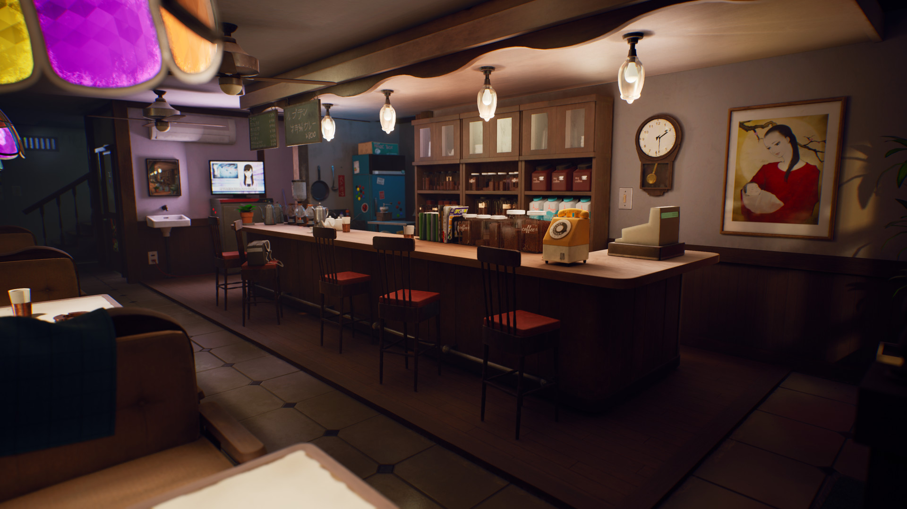
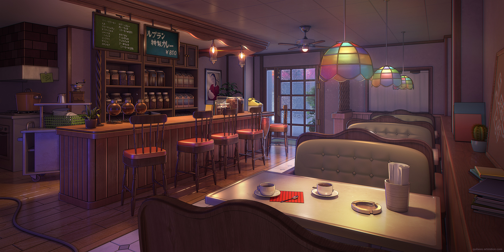
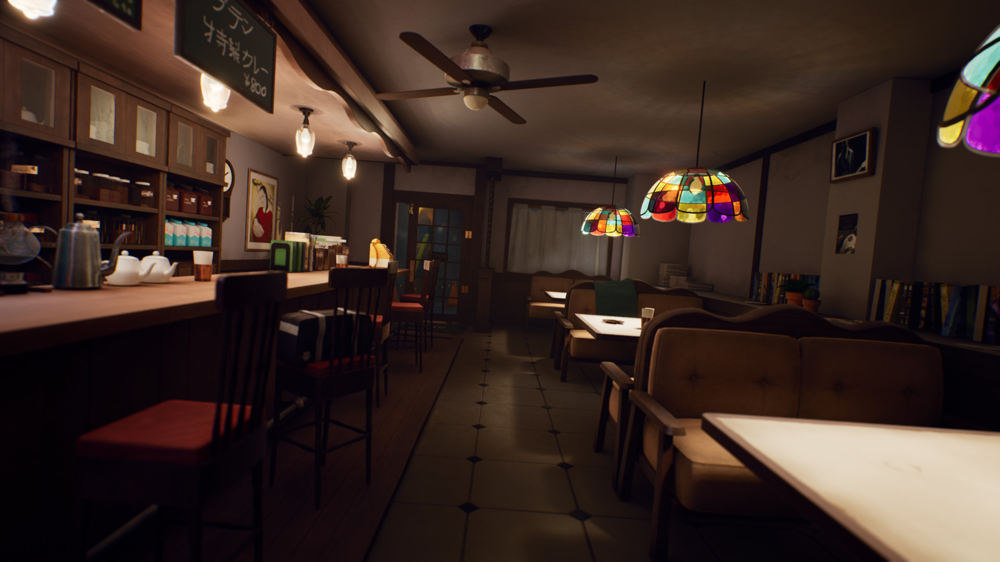
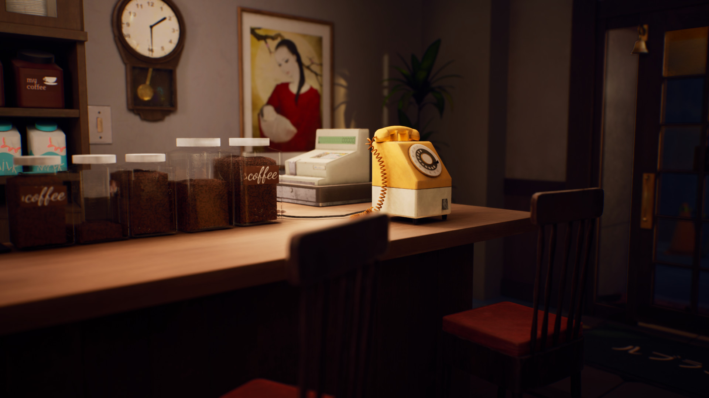
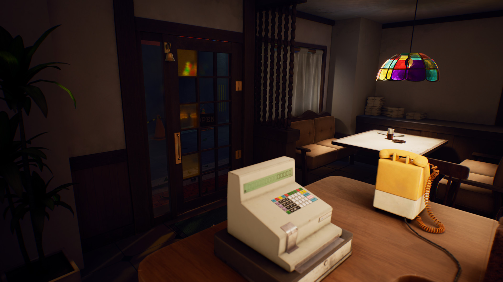
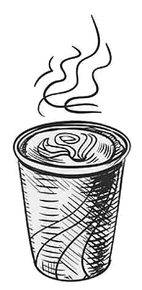
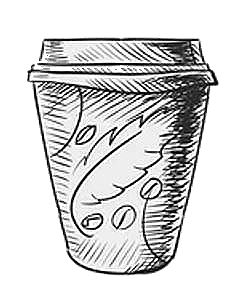
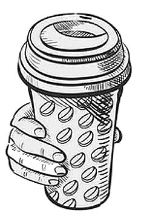
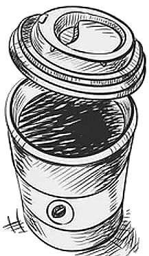
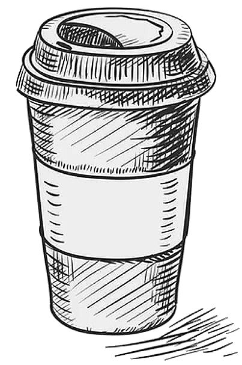

Welcome to Leblanc
Enjoy our delicious coffee and desserts!

A quiet corner of Yongen-Jaya

Hand-brewed, one cup at a time

Where strangers become regulars

Simple pleasures, carefully made

Curry on Sundays. Always.




